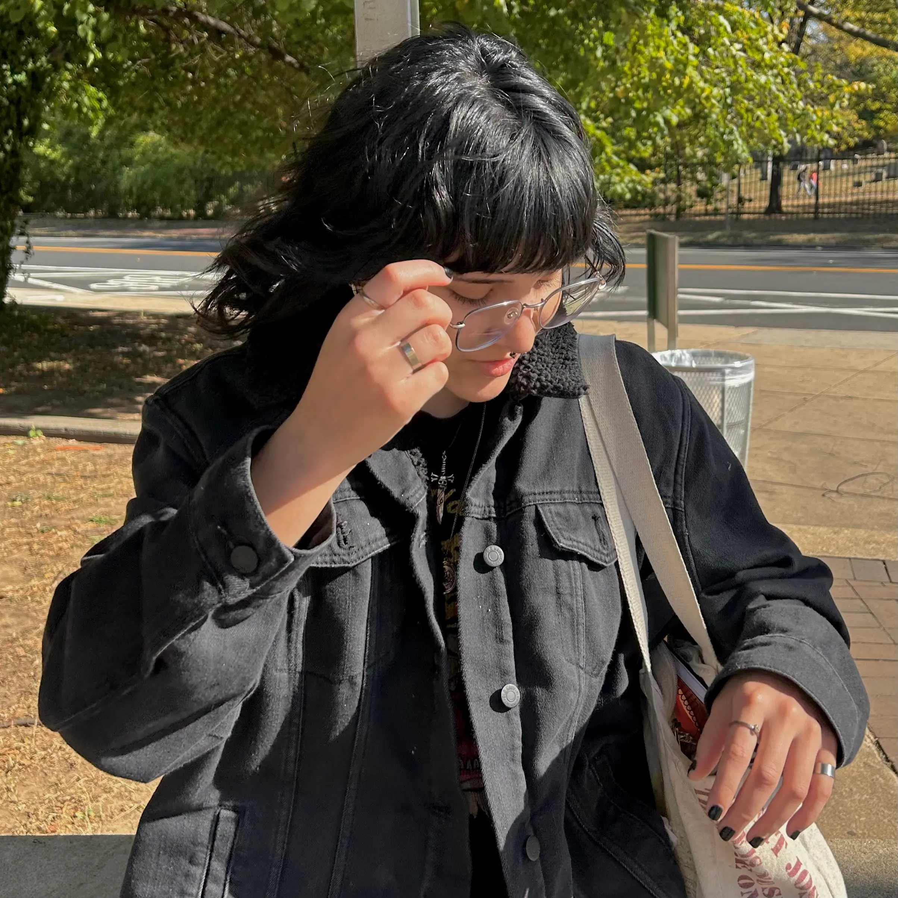

Hello!
My name is
Julia Eschner.
I am a second-year Management Information Systems major at Drexel University, with a User Experience and Interaction Design minor. I aspire to become a systems analyst because I’m passionate about developing technology that improves business processes. My goal is to connect technology and business to boost efficiency and create positive user experiences.